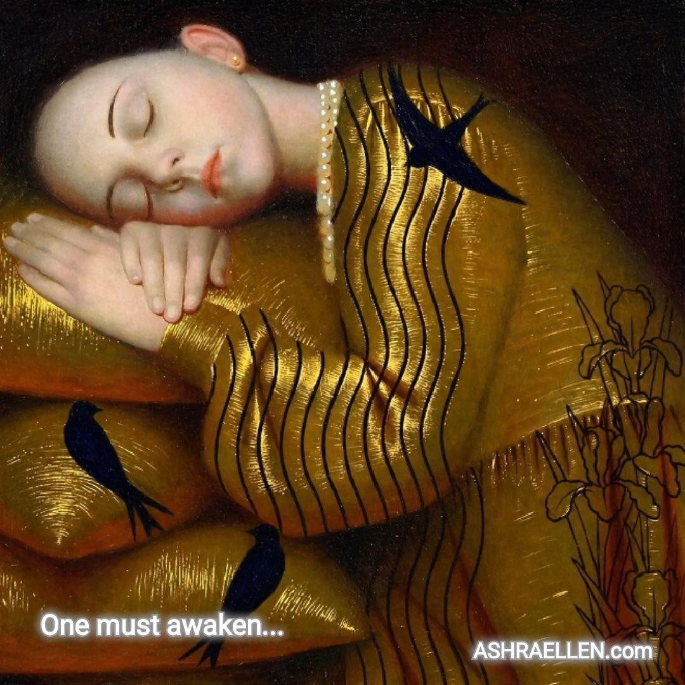

Tukiajatus 0009
Missä lakkasit olemasta elossa

Joskus herääminen tarkoittaa sitä, että näet ensimmäistä kertaa, missä kohdassa lakkasit olemasta elossa.
Merkitys
Herääminen ei näyttäydy miellyttävänä parannuksena vaan korvaamisen tunnistamisena: hereilläolo oli kiirettä, terveys kätevää turtumista ja elämä rooli, jonka osasi niin hyvin että luuli sitä itsekseen.
Koko teksti
On herättävä.
Toivuttava.
Tultava eläväksi.
Kuulostaa yksinkertaiselta.
Mutta vaikeus on siinä, että on herättävä siitä, mitä ihminen on kauan pitänyt valveillaolona.
Omasta kiireestään.
Jatkuvasta puuhastelustaan.
Loputtomasta liikkeestä, joka vain näyttää elämältä.
On toivuttava siitä, mitä hän piti terveytenä.
Totutuista reaktioistaan.
Mukavasta kuuroudestaan.
Kyvystä sietää sitä, mikä on jo kauan rikkonut häntä sisältäpäin.
Ja eläväksi on tultava siitä, mikä näytti täydeltä elämältä.
Aikataulustaan.
Tavoitteista, jotka eivät enää lämmitä.
Rooleista, jotka ihminen oppi niin hyvin, että eräänä päivänä sekoitti ne itseensä.
Siksi todellinen herääminen on harvoin miellyttävää.
Se ei aina saavu heleän musiikin ja lempeän aamun mukana.
Joskus se saapuu rehellisenä oivalluksena:
sinä nukuit juuri siellä, missä luulit olevasi hereillä.
olit sairas juuri siinä, mitä kutsuit terveydeksi.
ja vain selvisit hengissä siellä, missä luulit eläväsi.
Herääminen ei tarkoita toiseksi ihmiseksi muuttumista.
Joskus se tarkoittaa sitä, että näet ensimmäistä kertaa,
missä lakkasit olemasta elävä...
Miksi tämä valittiin
Ajatus erottaa elävän heräämisen sen kauniista kuvasta. Se ei lupaa romanttista valaistumista vaan näyttää paikan, jossa ihminen on kutsunut selviytymistä elämäksi.
Tutkimushuomio
Kyse ei ole lääketieteellisestä sairaudesta vaan normin psykologisesta korvautumisesta. Ihminen voi toimia moitteettomasti ja silti olla erossa omasta elävyyden kokemuksestaan.
 — mark of presence
— mark of presence